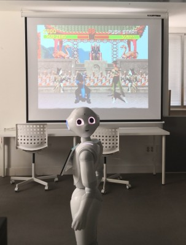

and summarizing, in how we can learn new things. The main goal of this site is sharing thoughts and projects related to those fascinating fields. Even if we knew we would never find the answers, we'd have to keep on asking questions. Always learning! # Posts